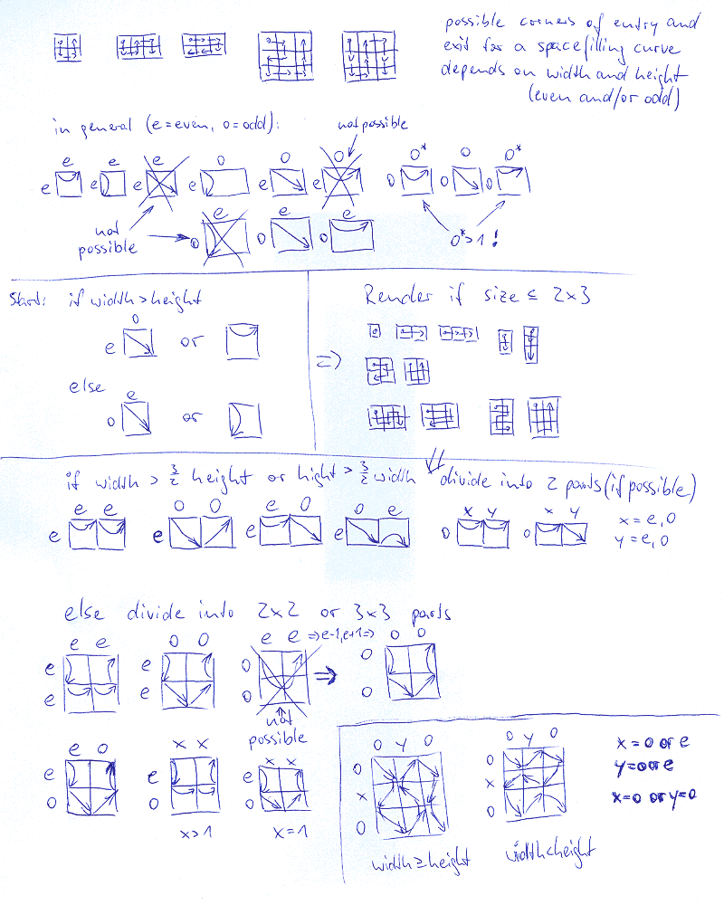

If you want to use this page offline, you must also download and unzip
diagram.zip and copy this file (draw_sfc.html)
and the file
spacefilling.html into the diagram directory. The algorithm, which draws the spacefilling curve, in short
is the following (for more details have a look at the source code of spacefilling.html). It was tested up to a size of 33x33 to work without
bugs.
